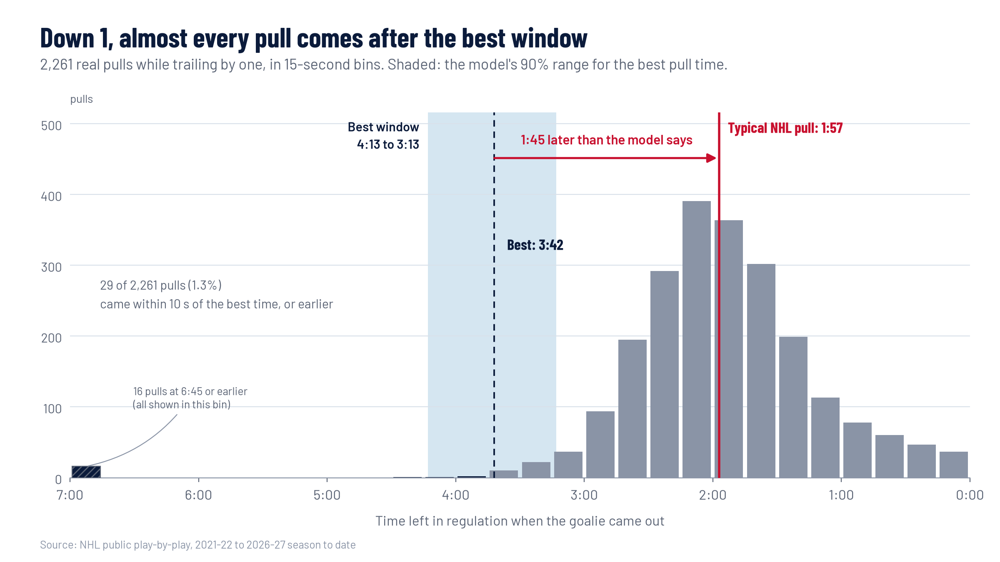
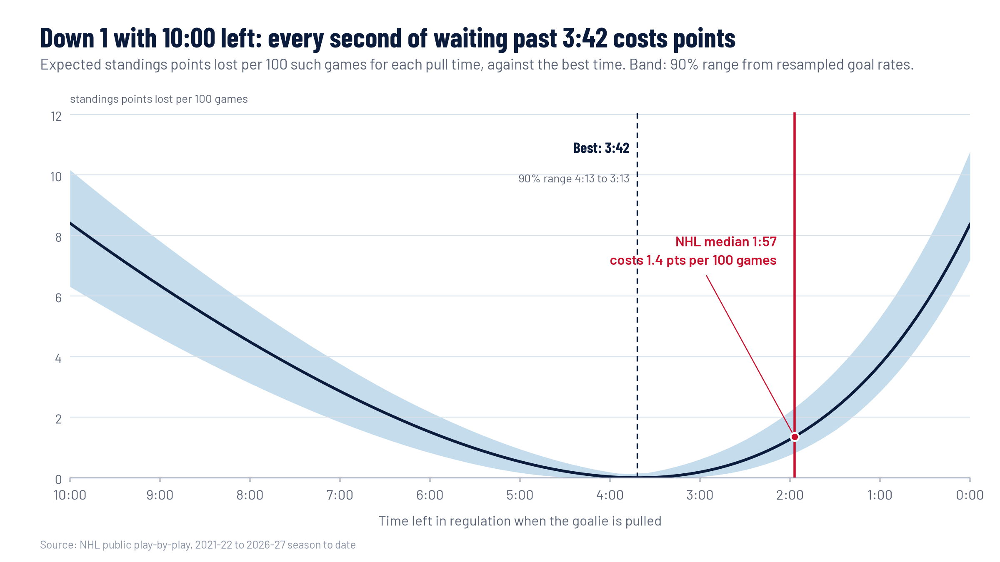
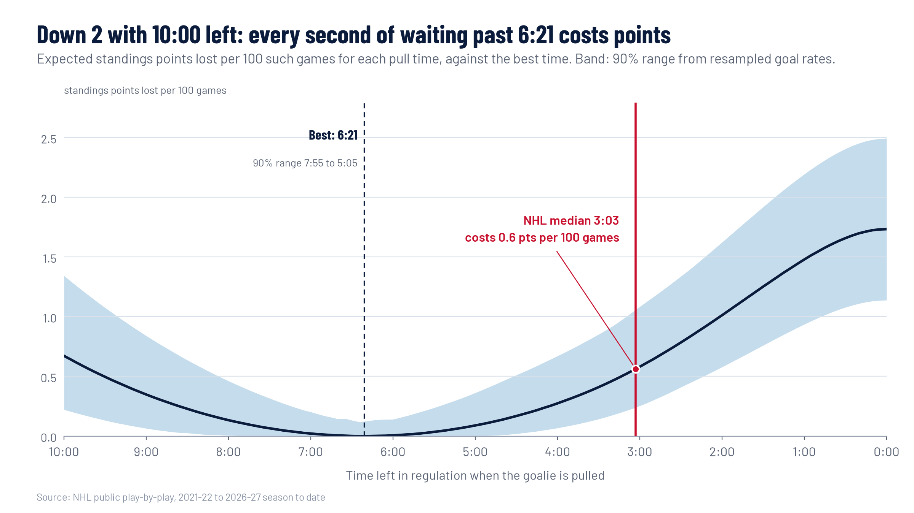
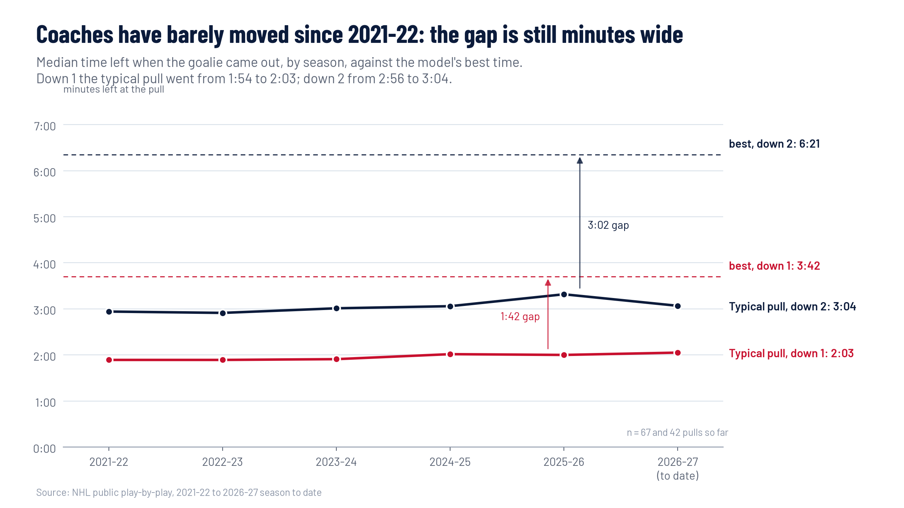
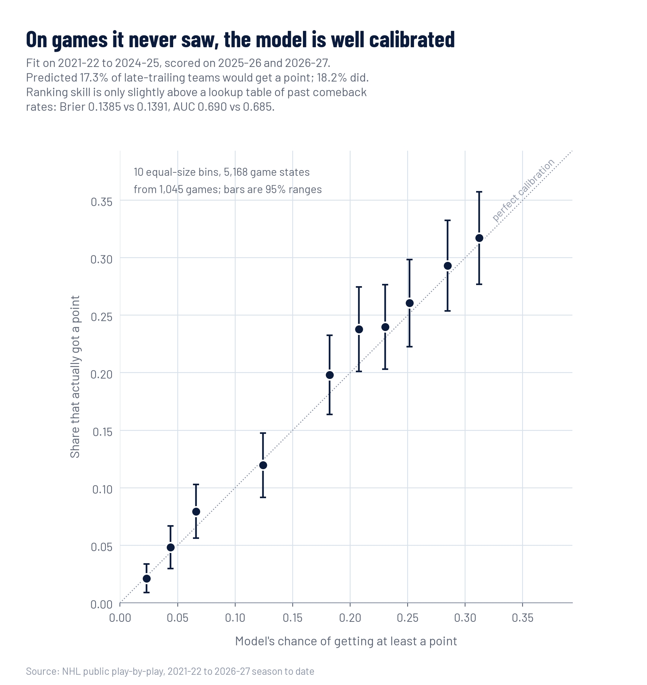
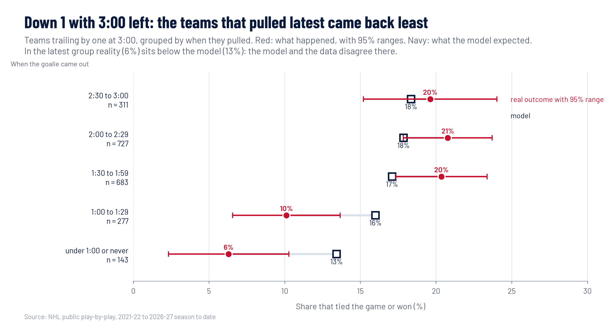
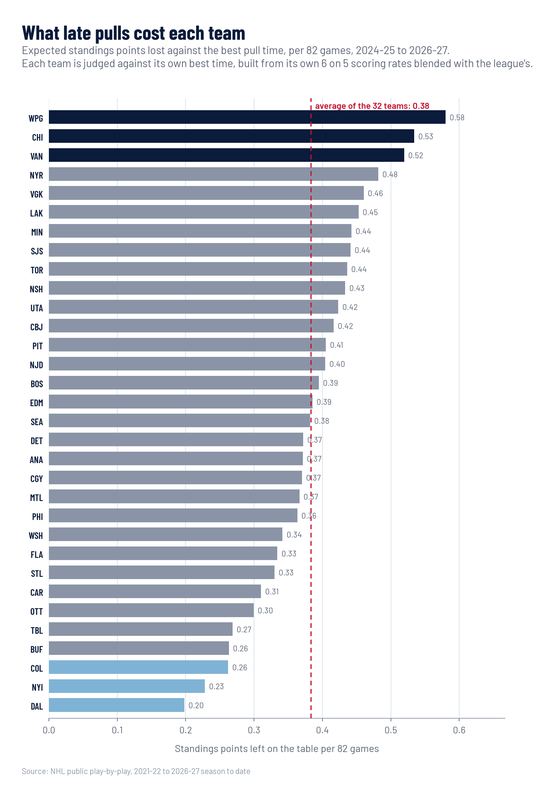
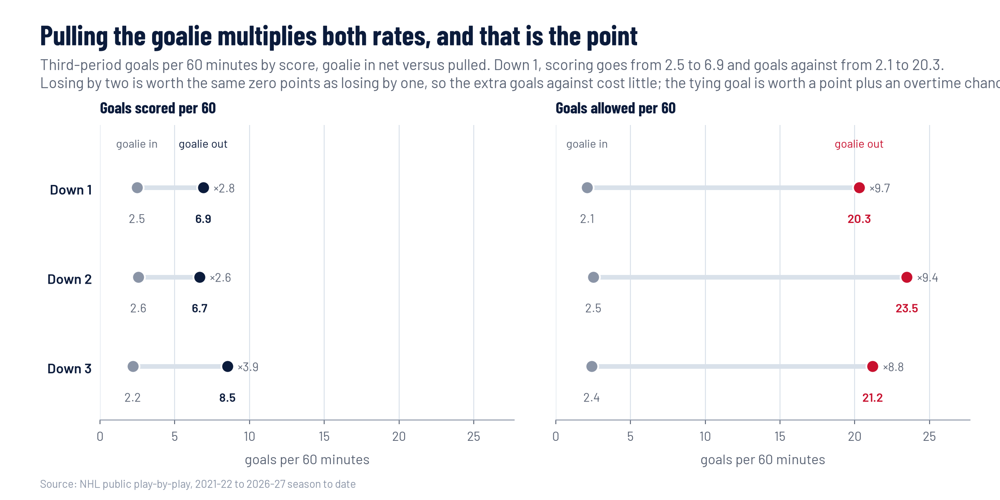

The bench tool
Pick a game state. The model tells you whether to pull now or how long to wait, and what each choice is worth.
| Pull right now | |
| Pull at the best time | |
| Pull at the NHL median time |
What six seasons of pulls say




Does it hold up on games it never saw?
I fit every goal rate on 2021-22 through 2024-25 only, then scored the model on every 2025-26 and 2026-27 game where a team trailed by one or two goals at eight checkpoints in the last ten minutes. The model never sees outcomes; it only knows goal rates, the clock and when that team actually pulled.


Every team
Team specific best times use each club's own 6 on 5 goals for and against from , blended with the league rate because a team only plays well under an hour a season at 6 on 5. Treat team differences as a nudge, not a verdict. Click a heading to sort.

How it works
- Data. Every regular season game from 2021-22 to today from the NHL's public feed (api-web.nhle.com). Each event carries a situation code that says how many skaters and goalies each side has, so I can see the exact moment a goalie leaves.
- Clean pulls. Delayed penalty extra attackers look like pulls in the data. Any goalie out stretch that ends with a penalty on the other team within 75 seconds is removed.
- Goal rates. Third period goals for and against per 60 minutes, split by score and by whether the goalie is in or out. Pulling down 1 lifts a team's scoring from 2.5 to 6.9 goals per 60, while goals against jump from 2.1 to 20.3.
- Model. A second by second Markov chain over the score and the clock, solved backwards from the final horn. In the regular season a tie is worth a point plus a coin flip in overtime, so it optimises standings points; the playoff mode optimises win chance.
- Uncertainty. 400 draws of every goal rate from its posterior, re solved each time, give the 90% range on the best pull time.
- Backtest and cost. Out of sample calibration as above, then each real decision is priced as points lost versus the best policy from that exact moment.

Robustness
![Dot plot of the best goalie pull time in the main case and 7 alternative assumptions. Down one it stays between 3:23 and 4:13; down two between 5:28 and 7:05. Cases: Main: all seasons, standings points, OT 50/50: 3:42 and 6:21; Playoff mode: win probability: 3:58 and 6:35; Overtime win rate 45 percent for the team that came back: 3:43 and 6:22; Overtime win rate 55 percent: 3:41 and 6:20; Train seasons only (2021-22 to 2024-25): 3:23 and 7:05; Trailing 5 on 5 rates from the whole third period: 3:50 and 6:25; All manpower states (penalties folded in): 3:39 and 6:55; Recent seasons only (2024-25 onward): 4:13 and 5:28.](img/v2/sensitivity.png)
Limits
The model treats both teams as league average unless you pick a team, ignores which zone the faceoff is in, and assumes the coach can pull at any second. Real coaches wait for possession or an offensive zone draw, which is one reason to start looking for the moment a little before the best time, not after it.